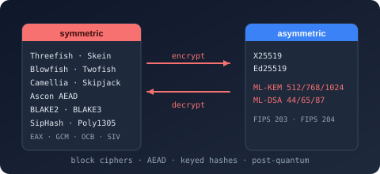

Namespace Bodu.Security.Cryptography

Purpose
Bodu.Security.Cryptography is a self-contained collection of managed block-cipher, stream-cipher, cipher-mode, padding, AEAD, keyed-hash, cryptographic-hash, Merkle-tree, public-key (Ed25519, X25519, ML-KEM, ML-DSA, HPKE), key-derivation (Argon2, scrypt, HKDF), and one-time-password implementations. The block ciphers, digests, MACs, and public-key schemes plug into the standard .NET cryptography contracts (HashAlgorithm, SymmetricAlgorithm, AsymmetricAlgorithm), plus Bodu's TweakableSymmetricAlgorithm and IBlockCipher; the stream ciphers, AEAD transforms, ASCON XOFs, Merkle trees, KDFs, and OTP helpers use their own shapes.
Reach for this library when you need a tweakable block cipher that isn't in the BCL (Threefish, wide-block Serpent), a managed implementation of an AES-finalist cipher (Camellia, Twofish, Serpent, Blowfish, Skipjack), a software stream cipher (ChaCha20, XChaCha20, Salsa20, XSalsa20, Rabbit, HC-128), authenticated-encryption mode transforms for AES (GCM / CCM / OCB / EAX / SIV / GCM-SIV), the ASCON family (Hash256, HashA256, XOF128, CXOF128, AEAD128), a keyed hash for hash-table protection or message authentication (SipHash, Poly1305), a cryptographic digest with a specific design lineage (Tiger, CubeHash, Snefru, Whirlpool, BLAKE2/3, Skein, Shake), or the RFC 6962 Merkle tree with inclusion and consistency proofs for verifiable integrity over chunked input.
For non-cryptographic checksums and hash-table hashes (CRC, Fletcher, Adler, FNV, CityHash, MurmurHash3, Pearson, classic string hashes) see the companion Bodu.IO.Hashing package, which is built on NonCryptographicHashAlgorithm.
Static documentation
- Bodu.Security.Cryptography introduction — namespaces, headline types, scenarios.
- Bodu.Security.Cryptography getting started — install and minimal samples for ciphers, AEAD, keyed hashes, and digests.
- Bodu.Security.Cryptography guides — encryption basics, cipher modes, padding, composing primitives, stream ciphers, AEAD modes, keyed and cryptographic hashing, the ASCON family.
- Bodu.IO.Hashing introduction — the sibling library, for non-cryptographic checksums and fingerprints (no adversary model).
Key types
Standard block ciphers (SymmetricAlgorithm lifecycle)
- Skipjack — 64-bit block, 80-bit key. Legacy / interoperability use only.
- Blowfish — 64-bit block, 32–448-bit key. Well-studied legacy algorithm with an expensive key schedule.
- Camellia — 128-bit block, 128 / 192 / 256-bit key (RFC 3713; ISO/IEC 18033-3).
- Twofish — 128-bit block, 128 / 192 / 256-bit key (Schneier et al., AES finalist).
- Serpent128 — 128-bit block, 128 / 192 / 256-bit key (Anderson / Biham / Knudsen, AES finalist; highest margin).
Tweakable block ciphers (TweakableSymmetricAlgorithm lifecycle, adds Tweak / GenerateTweak())
- Threefish256, Threefish512, Threefish1024 — 256 / 512 / 1024-bit blocks and keys, all with a 128-bit tweak. Threefish-512 is the recommended general-purpose variant; Threefish-256 underpins Skein-256.
- Serpent256, Serpent512, Serpent1024 — wide-block tweakable Serpent constructions (non-standard).
Stream ciphers (SymmetricStreamAlgorithm lifecycle — a standalone IDisposable base, not a SymmetricAlgorithm: Key, Nonce / NonceSize, GenerateKey() / GenerateNonce(), CreateTransform(), with CreateEncryptor() / CreateDecryptor() as aliases of the same self-inverse transform; no block mode, no padding. Confidentiality-only — no authentication)
- ChaCha20 — 256-bit key, 96-bit nonce, 32-bit counter (Bernstein; RFC 8439). The modern default.
- XChaCha20 — 256-bit key, 192-bit nonce; extended-nonce ChaCha20 via an HChaCha20 subkey, so the nonce can be chosen at random.
- Salsa20 — 128- or 256-bit key, 64-bit nonce, 64-bit counter (Bernstein; eSTREAM).
- XSalsa20 — 256-bit key, 192-bit nonce; extended-nonce Salsa20 (NaCl / libsodium).
- Rabbit — 128-bit key, 64-bit IV (RFC 4503; eSTREAM). Evolving internal state, no seekable counter.
- Hc128 — 128-bit key, 128-bit IV (Wu; eSTREAM). Table-based with an expensive setup.
- IStreamCipher, TransformMode — the keystream-cipher contract and the encrypt/decrypt direction selector shared by the stream ciphers above.
Authenticated stream ciphers (Poly1305 AEAD over the extended-nonce stream ciphers)
- Poly1305AeadTransform — abstract base for the stream-cipher AEAD constructions; provides span and
byte[]Encrypt/Decryptwith associated data and in-place support. - XChaCha20Poly1305 — XChaCha20-Poly1305 AEAD with associated data (wire
ciphertext ‖ tag). - XSalsa20Poly1305Aead — XSalsa20-Poly1305 AEAD (RFC 8439 framing) with associated data.
- XSalsa20Poly1305 — the NaCl / libsodium
secretboxconstruction (no associated data), withToLibsodiumCombined/FromLibsodiumCombinedlayout converters. - IAeadTransform, IStreamAeadTransform — the AEAD and stream-AEAD transform contracts these constructions implement.
Cipher composition — block-cipher contracts, mode transforms, padding strategies
- IBlockCipher — block-cipher contract; implemented by every cipher and by
AesBlockCipher. - AesBlockCipher — an
IBlockCipheradapter over the BCLAesengine — the bridge between AES and the AEAD mode transforms. - SerpentBlockCipher, ThreefishBlockCipher — the raw
IBlockCipherengines (and the SerpentBlockCipherBase base) that back the Serpent and ThreefishSymmetricAlgorithmwrappers; use them directly to drive a mode transform without the full algorithm lifecycle. - BlockCipherTransform, BlockCipherModeFactory — compose any
IBlockCipherwith a mode and a padding strategy. The factory builds the five classic modes —ECB,CBC,CFB,OFB,CTR— and throwsNotSupportedExceptionfor every other CipherModeKind value (CTS,XTS,OCB,EAX,SIV), which are constructed directly as transforms instead. - CipherModeKind, PaddingModeKind — the library's extended block-mode and padding enums (the latter mirrors
System.Security.Cryptography.PaddingModeand addsISO7816_4). - IBlockCipherModeTransform, IAeadBlockCipherModeTransform — per-block / per-stripe transform contracts; the latter adds AEAD nonce / tag / associated-data semantics.
- Classic mode transforms: EcbModeTransform, CbcModeTransform, CfbModeTransform, OfbModeTransform, CtrModeTransform, CtsModeTransform, XtsModeTransform.
- AEAD mode transforms: GcmModeTransform, CcmModeTransform, OcbModeTransform, EaxModeTransform, SivModeTransform, GcmSivModeTransform.
- Padding: IPaddingStrategy with built-in strategies Pkcs7Padding, NoPadding, Iso10126Padding, Iso7816_4Padding, Ansix923Padding, selected via PaddingFactory.
Cryptographic hashes (HashAlgorithm lifecycle)
- Tiger — 128 / 160 / 192-bit cryptographic digest optimized for 64-bit platforms; two padding variants (Tiger / Tiger2).
- CubeHash — Bernstein's SHA-3 competition candidate.
- Snefru128, Snefru256 — Ralph Merkle's hash (cryptanalytically broken; included for research and interoperability).
- Whirlpool — 512-bit digest (ISO/IEC 10118-3) with an AES-derived round function.
- Blake2b, Blake2s, Blake3 — modern high-throughput digests; BLAKE3 is parallel and tree-structured.
- Skein256, Skein512, Skein1024 — Skein UBI-mode digests built on Threefish.
- Shake — Keccak XOF (FIPS 202).
- MerkleTree — the RFC 6962 Merkle Tree Hash over any HashAlgorithm the caller supplies as a
Func<HashAlgorithm>, as one immutable, stateless instance. Roots come from a list of entries (ComputeRoot/ComputeRootOfLeafHashes), from a stream, memory, or span cut into fixed-size blocks (ComputeBlocked/ComputeRootOfBlocks, with…Asynctwins), or incrementally throughCreateBlockAccumulator. Proofs areAuthenticationPathandConsistencyProofon the prover side andVerifyInclusion,VerifyInclusionOfLeafHash,VerifyInclusionBound,VerifyBlockInclusion, andVerifyConsistencyon the verifier side; every verifier returnsfalsefor malformed input rather than throwing.HashLeaf,HashNode, andBindRootexpose the three domain-separated primitives. Parallel leaf hashing (maxDegreeOfParallelism) and a wider, explicitly non-RFC fan-out (fanOut, on which the proof members throw) are constructor options. - MerkleBlockAccumulator — the push-style counterpart for a writer:
Appendthe bytes as they arrive, andFinish/FinishBound/FinishComputationproduce the same root, length-bound root, or block computation that a single pass over the whole input would. - MerkleBlockComputation — the result of a block-mode pass: the
Root, theInputLengthandBlockSizeit was computed over, and the orderedLeafHashesan authentication path needs. - The static
MerkleTree.BlockCount/BlockOffset/BlockLengthmembers — the block arithmetic as standalone 64-bit helpers for a verifier that holds only the numbers. - MerkleTreeDiagnostics (with its nested
Noderecord) — an optional recorder every root computation accepts and fills with every leaf and internal node the fold produces, re-validated against a freshHashAlgorithmwithValidateand dumped one node per line withWriteTo.
Keyed hashes / MACs
- SipHash64 — 64-bit PRF; collision-resistant for hash-table protection.
- SipHash128 — 128-bit SipHash variant for longer-output keyed hashing.
- Poly1305 — one-time authenticator (RFC 8439); pairs with a stream cipher for an AEAD construction.
ASCON family — NIST SP 800-232
- AsconHash256, AsconHashA256 — 256-bit sponge digests (12- and 8-round variants), over the shared AsconHash base.
- AsconXof128, AsconCxof128 — variable-length / customizable XOF.
- AsconAead128 — sponge-based authenticated encryption (no separate block cipher required).
Extensions and helpers
- SymmetricAlgorithmExtensions, TweakableSymmetricAlgorithmExtensions, AeadBlockCipherModeTransformExtensions, HashAlgorithmExtensions, ICryptoTransformExtensions — ergonomic one-shot, async, and verify helpers.
- SymmetricStreamAlgorithmExtensions, AeadTransformExtensions —
byte[]-returning one-shotEncrypt/Decryptover the stream ciphers and the Poly1305 stream-AEAD transforms. - Secure-zeroization, padding guards, and cryptographically secure random generation ship as internal infrastructure; consumers reach them through the public surfaces (
GenerateKey()/GenerateIV()/GenerateNonce()/GenerateTweak()on the algorithm types,Nonce.Random,HashAlgorithmExtensions.VerifyHash). - HashAlgorithmHelper, HashAlgorithmFactory, IHashAlgorithmFactory<T>, DelegateHashAlgorithmFactory<T> — helper utilities for
HashAlgorithmconsumers and factory abstractions used by the keyed constructions. - KeyedDeferredFinalBlockHashAlgorithm — abstract base for keyed hashes that defer the final block (the extension point shared by the keyed-hash constructions).
Asymmetric — signatures, key agreement, KEM, HPKE (AsymmetricAlgorithm lifecycle over RawKeyAsymmetricAlgorithm)
- Ed25519 — RFC 8032 EdDSA signatures; X25519 — RFC 7748 key agreement. Both carry RFC 8410 PKCS#8 / SubjectPublicKeyInfo DER and RFC 7468 PEM in addition to raw keys.
- MLDsa44, MLDsa65, MLDsa87 (over MLDsa) — FIPS 204 post-quantum signatures; MLKem512, MLKem768, MLKem1024 (over MLKem) — FIPS 203 post-quantum KEM. Raw FIPS encodings only.
- Hpke, HpkeSender, HpkeReceiver, HpkeSuite (with the HpkeKem / HpkeKdf / HpkeAead / HpkeMode selectors) — RFC 9180 hybrid public-key encryption: one-shot
Hpke.Seal/Hpke.Open, or the sender / receiver contexts for multi-message sessions and the exporter interface. - SignatureFormat, SignatureValue — signature-encoding selector and value type shared by the signature schemes.
Key derivation and password hashing
- Argon2id, Argon2i, Argon2d (over Argon2, with Argon2Parameters) — RFC 9106 memory-hard password hashing.
- Scrypt (with ScryptParameters) — RFC 7914 memory-hard password hashing.
- Hkdf — RFC 5869 HMAC extract-and-expand (
Extract/Expand/DeriveKey) for high-entropy input.
One-time passwords
- Hotp (RFC 4226), Totp (RFC 6238) — static
GenerateCode/VerifyCodehelpers; OtpHashAlgorithm selects SHA-1 / SHA-256 / SHA-512.
Value types
- HashValue, AuthenticationTag, Nonce, Salt, SignatureValue — immutable
readonly structwrappers for a digest, an AEAD tag, a nonce, a KDF salt, and a signature, with strict hex parsing / formatting and fixed-time equality where it matters. - SecretBytes — a disposable holder for sensitive byte material that pins its buffer and zeroes it on disposal.
Example
using System.Security.Cryptography;
using System.Text;
using Bodu.Security.Cryptography;
// Keyed hash for a hash-table protected against collision attacks.
byte[] data = Encoding.UTF8.GetBytes("the quick brown fox");
byte[] key = RandomNumberGenerator.GetBytes(16);
using var sip = new SipHash64 { Key = key };
ulong slot = BitConverter.ToUInt64(sip.ComputeHash(data));
Notes
- Security caveats.
- Skipjack is provided for historical and research purposes. It has an 80-bit key and a 64-bit block; do not use it for new systems.
- Blowfish is well-studied but dated; prefer Threefish, AES, or Camellia / Twofish / Serpent for new designs — its 64-bit block limits the safe encryption volume per key.
- Snefru128 and Snefru256 are cryptanalytically broken — interop / research only.
- SipHash64 is keyed and collision-resistant but short-output; use it for hash-table protection and message authentication over small inputs, not as a drop-in for a MAC like HMAC-SHA256.
- Tiger is a classic cryptographic hash. Prefer BCL-provided SHA-2 / SHA-3 for new designs; use Tiger for interoperability with existing Tiger-based systems.
- The stream ciphers (ChaCha20, XChaCha20, Salsa20, XSalsa20, Rabbit, Hc128) are raw and unauthenticated. A
(key, nonce)pair must encrypt at most one message — reuse reveals the XOR of the plaintexts — and ciphertext integrity is not protected. Pair them with a MAC (encrypt-then-MAC with Poly1305) or prefer an AEAD construction. A 64-bit nonce (Salsa20,Rabbit) is too short to choose randomly; use a counter, or an extended-nonce variant (XChaCha20/XSalsa20). - For error-detection and hash-table distribution (CRC, Fletcher, Adler, FNV, CityHash, MurmurHash3, Pearson, and the classic short hashes) use the non-cryptographic types in Bodu.IO.Hashing.
- Thread safety. Instances of the cipher and hash types follow the standard .NET convention: not thread-safe during a single
TransformBlock/ComputeHash/ encryption session. Create one instance per logical operation, or synchronize externally. AEAD mode transforms (GcmModeTransform, etc.) are single-use per message — construct a fresh transform on the encrypt side and another on the decrypt side. - Allocation discipline. Hot-path types allocate their working buffers in the constructor and reuse them, and every algorithm zeroes its secret material (keys, nonces, tweaks, sponge state) at disposal time — always
usingan instance. - Determinism and portability. All algorithms produce identical byte-for-byte output across platforms and architectures for the same input and configuration.
- See also: Bodu.IO.Hashing for CRC, Fletcher, Adler, and other non-cryptographic hashes; the Bodu.Security.Cryptography introduction, the encryption basics guide, the AEAD modes guide, and the hashing guide.
Classes
AesBlockCipher
Exposes the BCL Aes algorithm as an IBlockCipher, providing the single-block primitive that the authenticated-mode transforms (GcmModeTransform, CcmModeTransform, OcbModeTransform, SivModeTransform, GcmSivModeTransform) require.
Ansix923Padding
Implements the ANSI X.923 padding scheme, which appends N - 1 bytes of value 0x00 followed by a
trailing byte holding the padding length N.
Argon2
Provides the shared base for the Argon2 password-hashing and key-derivation functions defined by RFC 9106. The concrete variants are Argon2d, Argon2i, and Argon2id.
Argon2Parameters
Specifies the cost and auxiliary inputs for an Argon2 key-derivation or password-hashing operation, as defined by RFC 9106.
Argon2d
Computes the Argon2d password-hashing and key-derivation function (RFC 9106) — the variant that uses data-dependent memory addressing, maximizing time-memory trade-off resistance at the cost of exposing memory access patterns to side-channel observation. This class cannot be inherited.
Argon2i
Computes the Argon2i password-hashing and key-derivation function (RFC 9106) — the variant that uses data-independent memory addressing, making it resistant to side-channel timing attacks. This class cannot be inherited.
Argon2id
Computes the Argon2id password-hashing and key-derivation function (RFC 9106) — the hybrid variant that uses data-independent addressing for the first half of the first pass and data-dependent addressing thereafter. This is the RECOMMENDED default for password hashing. This class cannot be inherited.
AsconAead128
Provides authenticated encryption with associated data (AEAD) using the Ascon-AEAD128 algorithm as defined in
NIST SP 800-232. Accepts a 128-bit key and a 128-bit nonce and produces a 128-bit authentication tag. This class
cannot be inherited.
AsconCxof128
Computes a variable-length output using the Ascon-CXOF128 customizable extendable output function (CXOF) as
defined in NIST SP 800-232. Supports an optional customization string that domain-separates outputs from
AsconXof128. This class cannot be inherited.
AsconHash
Abstract base class for ASCON cryptographic hash algorithms as defined in NIST SP 800-232. Implements the shared sponge construction, padding, and Ascon-p permutation used by all fixed-output ASCON hash variants.
AsconHash256
Computes a hash using the ASCON-HASH256 cryptographic hash algorithm as defined in NIST SP 800-232. Produces
a 256-bit (32-byte) digest using the Ascon-p12 permutation over a 320-bit sponge state. This class cannot be
inherited.
AsconHashA256
Computes a hash using the ASCON-HASHA256 cryptographic hash algorithm as defined in NIST SP 800-232. Produces
a 256-bit (32-byte) digest using a reduced-round Ascon-p permutation during absorption over a 320-bit sponge state.
This class cannot be inherited.
AsconXof128
Computes a variable-length output using the Ascon-XOF128 extendable output function (XOF) as defined in NIST
SP 800-232. Uses the Ascon-p12 permutation for every absorption and squeeze round over a 320-bit sponge state. This
class cannot be inherited.
AsconXof<T>
Abstract base class for ASCON extendable output functions (XOFs) as defined in NIST SP 800-232. Implements the shared sponge construction, residual-buffer management, padding, and Ascon-p permutation used by AsconXof128 and AsconCxof128.
Blake2b
AVX-512 vectorised implementation of the BLAKE2b compression function. The 16-element working vector v is
laid out as four Vector256<T> rows (a, b, c, d), so the four parallel G calls in each
column step collapse into a single SIMD G operation. The diagonal step reuses the same kernel by shifting the
b, c, d rows by 1/2/3 lanes via VPERMQ, running G, then shifting back — the canonical
ChaCha-style vectorisation pattern Blake2 was designed around.
Blake2s
AVX-512 vectorised implementation of the BLAKE2s compression function. The 16-element working vector v is
laid out as four Vector128<T> rows (a, b, c, d), so the four parallel G calls in each
column step collapse into a single SIMD G operation. The diagonal step reuses the same kernel by shifting the
b, c, d rows by 1/2/3 lanes via PSHUFD, running G, then shifting back — the canonical
ChaCha-style vectorisation pattern Blake2 was designed around, mirroring the BLAKE2b path with 32-bit lanes in
128-bit registers.
Blake3
AVX-512 vectorised implementation of the BLAKE3 compression function. The 16-word working state is laid out as four
Vector128<T> rows (a, b, c, d), so the four parallel G calls in each column step
collapse into a single SIMD G operation. The diagonal step reuses the same kernel by shifting the
b, c, d rows by 1/2/3 lanes via PSHUFD, running G, then shifting back — the canonical
ChaCha-style vectorisation pattern that BLAKE3 inherits from BLAKE2.
BlockCipherModeFactory
Creates IBlockCipherModeTransform instances that wrap an IBlockCipher with a standard chaining mode.
BlockCipherTransform
Provides a base implementation of ICryptoTransform for block cipher algorithms that combine an IBlockCipher engine with an IBlockCipherModeTransform and an IPaddingStrategy.
BlockHashAlgorithm
Base class for hash algorithms that consume input in fixed-size blocks and pad the final partial block before processing it (the Merkle–Damgård shape). Handles block alignment and final-block padding orchestration on behalf of derived implementations; the residual buffer, running byte total, and disposal latch are inherited from BufferedBlockHashAlgorithm.
Blowfish
Provides a managed implementation of the Blowfish symmetric block cipher. This class cannot be inherited.
BlowfishBlockCipher
Provides the core Blowfish block cipher engine, implementing low-level encryption and decryption of individual 64-bit blocks.
BufferedBlockHashAlgorithm
Provides the shared infrastructure for hash algorithms that consume input in fixed-size blocks. Owns the residual buffer, the running total of bytes consumed, the disposal latch, and the HashCore(byte[], int, int) to HashCore(ReadOnlySpan<byte>) delegation.
Camellia
Provides a managed implementation of the Camellia symmetric block cipher, exposing the CamelliaBlockCipher engine through the standard SymmetricAlgorithm framework. This class cannot be inherited.
CamelliaBlockCipher
Provides the core Camellia block cipher engine, implementing low-level encryption and decryption of individual 128-bit blocks. This class cannot be inherited.
CbcModeTransform
Applies the Cipher Block Chaining (CBC) mode transformation to an underlying IBlockCipher.
CcmModeTransform
Applies Counter with CBC-MAC (CCM) mode to an underlying IBlockCipher, providing authenticated encryption with associated data (AEAD) per NIST SP 800-38C.
CfbModeTransform
Applies the Cipher Feedback (CFB) mode transformation to an underlying IBlockCipher, turning it into a self-synchronizing stream cipher.
ChaCha20
Provides a managed implementation of the raw ChaCha20 stream cipher defined by RFC 8439. This class cannot be inherited.
CtrModeTransform
Applies Counter (CTR) mode to an underlying IBlockCipher, turning it into a synchronous stream cipher. The counter is incremented in big-endian order (rightmost byte first), matching NIST SP 800-38A Section 6.5.
CtsModeTransform
Applies Ciphertext Stealing (CTS) over CBC mode to an underlying IBlockCipher, allowing encryption of inputs whose length is not a multiple of the block size without requiring padding.
CubeHash
Computes a hash using the CubeHash permutation-based hash algorithm designed by Daniel J. Bernstein and
submitted to the NIST SHA-3 competition. This class cannot be inherited.
DeferredFinalBlockHashAlgorithm
Base class for hash algorithms that defer compression of the final full block until HashFinal() so that a finalization flag may be raised on the last compression call (the Blake-family shape). Owns the defer-on-full-block buffering loop and the zero-pad-then-finalize orchestration; the residual buffer, running byte counter, and disposal latch are inherited from BufferedBlockHashAlgorithm.
DelegateHashAlgorithmFactory<T>
Provides a delegate-based implementation of IHashAlgorithmFactory<T> for constructing hash algorithm instances.
EaxModeTransform
Applies EAX mode to an underlying IBlockCipher, providing two-pass authenticated encryption with associated data (AEAD) per Bellare, Rogaway and Wagner (FSE 2004).
EcbModeTransform
Applies the Electronic Codebook (ECB) mode transformation to an underlying IBlockCipher, encrypting or decrypting each block independently with no chaining.
Ed25519
Provides a managed implementation of the Ed25519 digital signature algorithm (PureEdDSA over edwards25519) as defined in RFC 8032, exposed through the standard AsymmetricAlgorithm framework. This class cannot be inherited.
ExtendedSymmetricAlgorithm
Serves as the base class for the library's SymmetricAlgorithm implementations that support the extended cipher-mode and padding catalogues (CipherModeKind / PaddingModeKind) beyond the framework CipherMode / PaddingMode enumerations.
GcmModeTransform
Applies Galois/Counter Mode (GCM) to a 128-bit block cipher, providing single-pass authenticated encryption with associated data (AEAD) per NIST SP 800-38D.
GcmSivModeTransform
Applies GCM-SIV mode to an underlying IBlockCipher, providing nonce-misuse resistant authenticated encryption per RFC 8452.
HashAlgorithmFactory
Provides static factory helpers for constructing delegate-based implementations of IHashAlgorithmFactory<T>.
HashAlgorithmHelper
Provides high-performance utility methods for one-shot hashing using factory-created HashAlgorithm instances.
Hc128
Provides a managed implementation of the HC-128 stream cipher specified by Hongjun Wu. This class cannot be inherited.
Hkdf
Provides the HMAC-based Extract-and-Expand Key Derivation Function (HKDF) defined in RFC 5869, exposing the
Extract, Expand, and combined DeriveKey stages over the SHA-1 and SHA-2 family of hash
algorithms. This class cannot be instantiated.
Hotp
Provides the HMAC-based One-Time Password (HOTP) algorithm defined in RFC 4226, generating and verifying the counter-based codes used for two-factor authentication. This class cannot be instantiated.
Hpke
Provides the single-shot Hybrid Public Key Encryption (HPKE) operations of RFC 9180 §6, encrypting or decrypting one message to or from a public key in a single call. This class cannot be instantiated.
HpkeReceiver
Represents the recipient side of an HPKE exchange (RFC 9180 §5.2): a session that reconstructs the shared secret from an encapsulated key and then opens any number of sealed messages and exports any number of secrets under that secret. This class cannot be inherited.
HpkeSender
Represents the sender side of an HPKE exchange (RFC 9180 §5.2): a session that encapsulates a shared secret to a recipient once and then seals any number of messages and exports any number of secrets under that secret. This class cannot be inherited.
HpkeSuite
Describes a complete HPKE cipher suite — the combination of a Key Encapsulation Mechanism (KEM), a Key Derivation Function (KDF), and an Authenticated Encryption with Associated Data (AEAD) function — and exposes the derived element lengths defined by RFC 9180. Instances are immutable.
Iso10126Padding
Implements the ISO 10126 padding scheme, which appends N - 1 cryptographically random bytes followed by a
trailing byte holding the padding length N.
Iso7816_4Padding
Implements the ISO/IEC 7816-4 padding scheme (also known as "one-and-zeros" or bit padding). The first pad byte is
0x80 and remaining pad bytes are 0x00.
KeyedBlockHashAlgorithm
Represents the abstract base class for hash algorithms that require a secret key and process data in fixed-size blocks.
KeyedDeferredFinalBlockHashAlgorithm
Represents the abstract base class for hash algorithms that support an optional secret key and defer compression of the final block until HashFinal() is called, following the BLAKE-family deferred-finalization pattern.
MLDsa
Provides the family base class for the ML-DSA module-lattice digital signature algorithm standardized by NIST FIPS 204, exposed through the standard AsymmetricAlgorithm framework. Use the sealed MLDsa44, MLDsa65, or MLDsa87 parameter sets.
MLDsa44
Provides the ML-DSA-44 parameter set of NIST FIPS 204 (matrix 4×4, NIST security category 2). This class cannot be inherited.
MLDsa65
Provides the ML-DSA-65 parameter set of NIST FIPS 204 (matrix 6×5, NIST security category 3 — the most widely recommended general-purpose set). This class cannot be inherited.
MLDsa87
Provides the ML-DSA-87 parameter set of NIST FIPS 204 (matrix 8×7, NIST security category 5). This class cannot be inherited.
MLKem
Provides the family base class for the ML-KEM module-lattice key-encapsulation mechanism standardized by NIST FIPS 203, exposed through the standard AsymmetricAlgorithm framework. Use the sealed MLKem512, MLKem768, or MLKem1024 parameter sets.
MLKem1024
Provides the ML-KEM-1024 parameter set of NIST FIPS 203 (module rank 4, NIST security category 5, comparable to AES-256). This class cannot be inherited.
MLKem512
Provides the ML-KEM-512 parameter set of NIST FIPS 203 (module rank 2, NIST security category 1, comparable to AES-128). This class cannot be inherited.
MLKem768
Provides the ML-KEM-768 parameter set of NIST FIPS 203 (module rank 3, NIST security category 3, comparable to AES-192) — the parameter set most widely deployed for TLS hybrid key exchange. This class cannot be inherited.
MerkleBlockAccumulator
Accumulates a byte stream into fixed-size Merkle leaves as it is written, so a root can be produced from the same calls that already feed a flat digest — without a second pass over the input.
MerkleBlockComputation
Represents the result of one block-mode Merkle computation: the tree's root, the shape of the input it was taken over, and the ordered leaf hashes an authentication path is built from.
MerkleTree
The block arithmetic every consumer of block mode shares — the number of blocks a byte length divides into, and the offset and length of each one.
MerkleTreeDiagnostics
Captures the complete node-by-node trace of a Merkle computation, and provides structural inspection and independent hash re-validation.
MerkleTreeDiagnostics.Node
Represents a single node captured during a Merkle tree computation, recording the child hashes used as input and the hash value produced as output.
NoPadding
Represents a pass-through padding strategy that adds and removes no bytes, requiring the caller to provide data whose length is already a multiple of the cipher block size.
OcbModeTransform
Applies Offset CodeBook mode version 3 (OCB3) to an underlying IBlockCipher, providing single-pass authenticated encryption with associated data per RFC 7253.
OfbModeTransform
Applies the Output Feedback (OFB) mode transformation to an underlying IBlockCipher, turning it into a synchronous stream cipher in which encryption and decryption are identical operations.
PaddingFactory
Creates IPaddingStrategy instances for the framework PaddingMode values and for the extended PaddingModeKind values.
Pkcs7Padding
Implements the PKCS#7 padding scheme (RFC 5652), which appends N bytes of value N to align the input
to the cipher block size.
Poly1305
Computes the message authentication code (MAC) for the input data using the Poly1305 algorithm. This
implementation enforces one-time key usage and produces a fixed 16-byte (128-bit) tag from a 256-bit key, as
specified in RFC 8439.
Poly1305AeadTransform
Provides the common IStreamAeadTransform implementation shared by the extended-nonce Poly1305 AEAD constructions — argument validation, buffer-overlap rules, single-use lifecycle, and secure clearing of retained key material. Derived types supply the keystream engine and, when required, an alternative framing.
Rabbit
Provides a managed implementation of the Rabbit stream cipher specified by RFC 4503. This class cannot be inherited.
RawKeyAsymmetricAlgorithm
Serves as the base class for the library's raw-key asymmetric algorithms (X25519, Ed25519, ML-KEM, ML-DSA), centralizing the shared key-material lifecycle: ownership of the current Bodu.Security.Cryptography.AsymmetricKeyMaterial, zeroizing replacement, dispose-time clearing, and the disposed-state guard.
Salsa20
Provides a managed implementation of the Salsa20 stream cipher specified by Daniel J. Bernstein. This class cannot be inherited.
Scrypt
Computes the scrypt sequential memory-hard password-hashing and key-derivation function defined by RFC 7914. This class cannot be inherited.
ScryptParameters
Specifies the cost parameters for a scrypt key-derivation or password-hashing operation, as defined by RFC 7914.
SecretBytes
Provides a disposable holder for sensitive byte material that pins its buffer and zeroes it on disposal.
Serpent
Serves as the abstract base class for the non-standard wide-block tweakable Serpent variants ( Serpent256, Serpent512, and Serpent1024).
Serpent1024
Provides a managed implementation of the non-standard wide-block tweakable Serpent-1024 symmetric block
cipher, which operates on 1024-bit (128-byte) blocks using a 1024-bit key and a 128-bit tweak. This class cannot be
inherited.
Serpent1024Cipher
Implements the wide-block tweakable Serpent-1024 block cipher variant, which operates on 1024-bit (128-byte)
blocks using a 1024-bit key and a 128-bit tweak. This class cannot be inherited.
Serpent128
Provides a managed implementation of the canonical Serpent symmetric block cipher, which operates on 128-bit
(16-byte) blocks using a 128, 192, or 256-bit key. This class cannot be inherited.
Serpent128Cipher
Implements the canonical Serpent block cipher, which operates on 128-bit (16-byte) blocks using a 128, 192,
or 256-bit key.
Serpent256
Provides a managed implementation of the non-standard wide-block tweakable Serpent-256 symmetric block
cipher, which operates on 256-bit (32-byte) blocks using a 256-bit key and a 128-bit tweak. This class cannot be
inherited.
Serpent256Cipher
Implements the wide-block tweakable Serpent-256 block cipher variant, which operates on 256-bit (32-byte)
blocks using a 256-bit key and a 128-bit tweak. This class cannot be inherited.
Serpent512
Provides a managed implementation of the non-standard wide-block tweakable Serpent-512 symmetric block
cipher, which operates on 512-bit (64-byte) blocks using a 512-bit key and a 128-bit tweak. This class cannot be
inherited.
Serpent512Cipher
Implements the wide-block tweakable Serpent-512 block cipher variant, which operates on 512-bit (64-byte)
blocks using a 512-bit key and a 128-bit tweak. This class cannot be inherited.
SerpentBlockCipher
Serves as the abstract base class for the non-standard wide-block tweakable Serpent engines ( Serpent256Cipher, Serpent512Cipher, Serpent1024Cipher).
SerpentBlockCipherBase
Serves as the abstract base class for managed Serpent block cipher engines, providing the shared S-boxes, bitsliced
linear transform, prekey recurrence, and resource-disposal plumbing used by the standard Serpent-128 variant
and the non-standard wide-block tweakable variants (Serpent-256, Serpent-512, Serpent-1024).
Shake
Computes a hash using the SHAKE family of extendable output functions (XOFs) as defined in NIST FIPS 202.
Supports security levels of 128 and 256 bits with a configurable output size. This class cannot be inherited.
SipHash
Base class for the SipHash family of keyed pseudorandom functions, a fast keyed hash designed by Aumasson and
Bernstein for short input messages. See the official SipHash specification
for details.
SipHash128
Computes a 128-bit keyed hash using the SipHash algorithm by Aumasson and Bernstein. Produces a 16-byte authentication tag from a 128-bit key, offering increased collision resistance over SipHash64 . This class cannot be inherited.
SipHash64
Computes a 64-bit keyed hash using the SipHash algorithm by Aumasson and Bernstein. Produces an 8-byte authentication tag from a 128-bit key and is intended to protect hash tables against collision-based denial-of-service attacks. This class cannot be inherited.
SivModeTransform
Applies Synthetic Initialization Vector (SIV) mode to two underlying IBlockCipher instances, providing deterministic authenticated encryption per RFC 5297 (AES-SIV).
Skein
Serves as the abstract base class for managed implementations of the Skein family of cryptographic hash
functions, built by Bruce Schneier and co-authors on top of the ThreefishBlockCipher tweakable block
cipher and submitted as a finalist to the NIST SHA-3 competition.
Skein1024
Computes a hash using the Skein-1024 variant of the Skein hash function, built on top of the
Threefish1024Cipher tweakable block cipher. This class cannot be inherited.
Skein256
Computes a hash using the Skein-256 variant of the Skein hash function, built on top of the
Threefish256Cipher tweakable block cipher. This class cannot be inherited.
Skein512
Computes a hash using the Skein-512 variant of the Skein hash function, built on top of the
Threefish512Cipher tweakable block cipher. This class cannot be inherited.
Skipjack
Provides a managed implementation of the Skipjack symmetric block cipher, exposing the SkipjackBlockCipher engine through the standard SymmetricAlgorithm framework. This class cannot be inherited.
SkipjackBlockCipher
Provides a managed implementation of the Skipjack block cipher engine, operating on 64-bit blocks with an 80-bit key over 32 rounds. Skipjack was designed by the United States National Security Agency (NSA) and declassified in 1998; the key schedule and Rule A / Rule B alternation are binary-compatible with the NSA reference implementation published in FIPS PUB 185 (1994).
Snefru
Base class for the Snefru family of unkeyed hash functions designed by Ralph Merkle, implementing the core
compression routine using S-box substitutions and word rotations over 512-bit blocks.
Snefru128
Computes a 128-bit (16-byte) hash using the Snefru hash algorithm by Ralph Merkle. This class cannot be
inherited.
Snefru256
Computes a 256-bit (32-byte) hash using the Snefru hash algorithm by Ralph Merkle. This class cannot be
inherited.
SymmetricStreamAlgorithm
Provides the common base for the library's additive (symmetric, shared-key) stream ciphers, sharing key and nonce storage, validation, generation, transform creation, and disposal.
Threefish
Serves as the abstract base class for managed implementations of the Threefish tweakable symmetric block cipher family (Threefish-256, Threefish-512, and Threefish-1024).
Threefish1024
Provides a managed implementation of the Threefish-1024 tweakable symmetric block cipher, which operates on
1024-bit (128-byte) blocks using a 1024-bit key and a 128-bit tweak. This class cannot be inherited.
Threefish1024Cipher
AVX-512 vectorised implementation of Threefish1024Cipher. The sixteen 64-bit state words are split
across two Vector512<T> registers — loVec holds the eight even-position words
(x0, x2, x4, x6, x8, x10, x12, x14) and hiVec the eight odd-position words
(x1, x3, x5, x7, x9, x11, x13, x15). Each round performs a vector add, a per-lane variable rotate (
VPROLVQ), an XOR, and a pair of single-source VPERMQ shuffles that realign the registers for the next
round's MIX pairing.
Threefish256
Provides a managed implementation of the Threefish-256 tweakable symmetric block cipher, which operates on
256-bit (32-byte) blocks using a 256-bit key and a 128-bit tweak. This class cannot be inherited.
Threefish256Cipher
AVX-512 vectorised implementation of Threefish256Cipher. The four 64-bit state words are split across
two Vector128<T> registers — lo holds the even-position words (b0, b2) and hi
the odd-position words (b1, b3). Each round performs a vector add, a per-lane variable rotate (VPROLVQ
), an XOR, and a single 64-bit lane swap on hi that realigns it for the next round's MIX pairing.
Threefish512
Provides a managed implementation of the Threefish-512 tweakable symmetric block cipher, which operates on
512-bit (64-byte) blocks using a 512-bit key and a 128-bit tweak. This class cannot be inherited.
Threefish512Cipher
AVX-512 vectorised implementation of Threefish512Cipher. The eight 64-bit state words are split
across two Vector256<T> registers — lo holds the even-position words (x0, x2, x4, x6)
and hi the odd-position words (x1, x3, x5, x7) — and each round applies a vector add, a per-lane
variable rotate (VPROLVQ), an XOR, and a pair of lane shuffles that realign the registers for the next
round's MIX pairing.
ThreefishBlockCipher
Serves as the abstract base class for managed Threefish block cipher engines, providing shared key and tweak
scheduling, resource disposal, and the core MIX/UNMIX primitives used by the Threefish-256,
Threefish-512, and Threefish-1024 variants.
Tiger
Computes a hash using the Tiger cryptographic hash algorithm by Ross Anderson and Eli Biham (1996), optimized
for 64-bit platforms. Supports output sizes of 128, 160, or 192 bits and both the original
Tiger and Tiger2 padding variants. This class
cannot be inherited.
Totp
Provides the Time-based One-Time Password (TOTP) algorithm defined in RFC 6238, generating and verifying the time-derived codes used for two-factor authentication. This class cannot be instantiated.
TweakableSymmetricAlgorithm
Serves as the abstract base class for tweakable symmetric algorithms, which accept an additional tweak value in addition to the key and initialization vector.
Twofish
Provides a managed implementation of the Twofish symmetric block cipher. This class cannot be inherited.
TwofishBlockCipher
Provides the core Twofish block cipher engine, implementing low-level encryption and decryption of individual 128-bit blocks.
Whirlpool
Computes a 512-bit cryptographic hash using the Whirlpool algorithm designed by Paulo S. L. M. Barreto and
Vincent Rijmen. Supports all three published revisions: Whirlpool-0 (2000), Whirlpool-T (2001) and the
final Whirlpool function standardized by ISO/IEC 10118-3 in 2003. This class cannot be inherited.
X25519
Provides a managed implementation of the X25519 elliptic-curve Diffie-Hellman key agreement function defined in RFC 7748, exposed through the standard AsymmetricAlgorithm framework. This class cannot be inherited.
XChaCha20
Provides a managed implementation of the extended-nonce XChaCha20 stream cipher. This class cannot be inherited.
XChaCha20Poly1305
Provides authenticated encryption with associated data (AEAD) using the extended-nonce XChaCha20-Poly1305
construction. Accepts a 256-bit key and a 192-bit nonce and produces a 128-bit authentication tag. This class cannot
be inherited.
XSalsa20
Provides a managed implementation of the extended-nonce XSalsa20 stream cipher specified by Daniel J. Bernstein. This class cannot be inherited.
XSalsa20Poly1305
Provides authenticated encryption using the XSalsa20-Poly1305 construction of NaCl / libsodium
crypto_secretbox, with the Bodu AEAD combined layout ciphertext ‖ tag. Accepts a 256-bit key and a
192-bit nonce and produces a 128-bit authentication tag. This class cannot be inherited.
XSalsa20Poly1305Aead
Provides authenticated encryption with associated data (AEAD) using the XSalsa20 stream cipher with the RFC 8439 Poly1305 framing. Accepts a 256-bit key and a 192-bit nonce and produces a 128-bit authentication tag. This class cannot be inherited.
XtsModeTransform
Applies XEX-based Tweaked CodeBook mode with ciphertext Stealing (XTS) to an underlying pair of IBlockCipher instances, per IEEE Std 1619-2007 / NIST SP 800-38E.
ZeroPadding
Implements zero-byte padding, appending 0x00 bytes until the input aligns with the cipher block size.
Structs
AuthenticationTag
Represents the authentication tag produced by an authenticated-encryption (AEAD) operation.
HashValue
Represents the immutable output of a hash operation, with strict hexadecimal parsing, common text formattings, and explicit fixed-time comparison.
Nonce
Represents a number-used-once supplied to an authenticated-encryption or stream-cipher operation.
Salt
Represents a salt supplied to a key-derivation or password-hashing operation.
SignatureValue
Represents a digital-signature value together with its wire encoding.
Interfaces
IAeadBlockCipherModeTransform
Represents an authenticated encryption with associated data (AEAD) block cipher mode transform that encrypts or decrypts data and produces or verifies an integrity tag.
IAeadTransform
Represents an authenticated encryption with associated data (AEAD) transform — the construction-neutral surface shared by block-cipher AEAD modes (IAeadBlockCipherModeTransform) and stream-cipher AEADs ( IStreamAeadTransform). A single call encrypts or decrypts a message together with its associated data; associated data is optional and defaults to empty.
IBlockCipher
Defines a symmetric block cipher that encrypts and decrypts data one fixed-size block at a time.
IBlockCipherModeTransform
Defines a stateful block cipher mode transformation that applies a chaining strategy (such as ECB, CBC, CFB, OFB, or CTR) over a block cipher primitive.
IHashAlgorithmFactory<T>
Defines a factory that produces configured instances of a specific HashAlgorithm implementation.
IPaddingStrategy
Defines methods for applying and removing padding to data blocks in block cipher operations.
IStreamAeadTransform
Represents a stream-cipher authenticated-encryption (AEAD) transform — an IAeadTransform backed by a stream cipher and a one-time message-authentication code rather than a block-cipher mode. The extended-nonce Poly1305 AEADs (XChaCha20Poly1305, XSalsa20Poly1305, XSalsa20Poly1305Aead ) implement this surface.
IStreamCipher
Defines a synchronous, additive stream cipher engine that produces a key- and nonce-dependent keystream in fixed-size blocks.
Enums
CipherModeKind
Specifies a block-cipher mode for encrypting or decrypting multi-block messages. Mirrors the standard framework CipherMode values where this library exposes the same mode, and extends that surface with additional modes that are not part of the framework enum.
HpkeAead
Identifies the Authenticated Encryption with Associated Data (AEAD) function of an HPKE cipher suite, using the algorithm identifiers from the IANA "HPKE AEAD Identifiers" registry defined by RFC 9180 §7.3.
HpkeKdf
Identifies the Key Derivation Function (KDF) of an HPKE cipher suite, using the algorithm identifiers from the IANA "HPKE KDF Identifiers" registry defined by RFC 9180 §7.2.
HpkeKem
Identifies the Key Encapsulation Mechanism (KEM) of an HPKE cipher suite, using the algorithm identifiers from the IANA "HPKE KEM Identifiers" registry defined by RFC 9180 §7.1.
HpkeMode
Identifies the HPKE establishment mode, which controls whether a pre-shared key and/or sender authentication contribute to the key schedule, per RFC 9180 §5.1.
OtpHashAlgorithm
Specifies the HMAC hash algorithm used to derive one-time-password codes, as permitted by the HOTP (RFC 4226) and TOTP (RFC 6238) specifications.
PaddingModeKind
Specifies a padding scheme for block-cipher operations. Mirrors the standard framework PaddingMode values and extends that surface with additional padding schemes that are not part of the framework enum.
SignatureFormat
Specifies the wire encoding of a digital-signature value.
TigerHashingVariant
Specifies the padding variant used by the Tiger hashing algorithm.
TransformMode
Defines the direction of a cryptographic transformation.
WhirlpoolVersion
Specifies the published revision of the Whirlpool hash algorithm selected by Version.